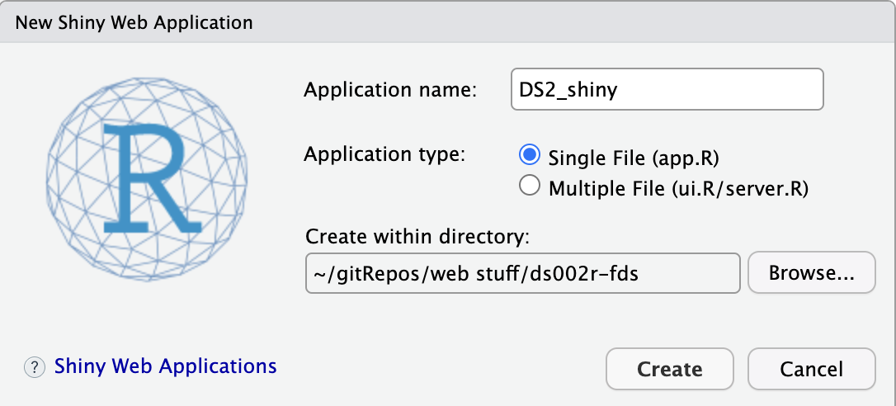
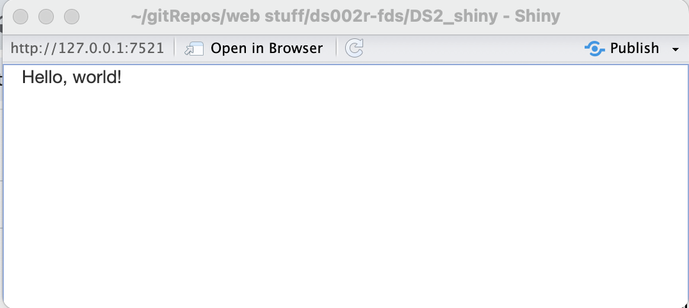

library(shiny)
ui <- fluidPage(
"Hello, world!"
)
server <- function(input, output, session) {
}
shinyApp(ui, server)Shiny
April 30, 2025
Agenda 4/30/25
- Shiny examples
- parts of a Shiny file
What is Shiny?
Shiny is an R package that allows you to easily create rich, interactive web apps. Shiny allows you to take your work in R or Python and expose it via a web browser so that anyone can use it.
Examples
See the following gallery of Shiny example from Posit: https://shiny.posit.co/r/gallery/
A simple Shiny App
Put the following into a Shiny App using File \(\rightarrow\) New File \(\rightarrow\) Shiny Web App ... as a file called app.R.

What are the parts of a Shiny App?
Looking closely at the code above, the app.R does four things:
It calls
library(shiny)to load the shiny package.It defines the user interface, the HTML webpage that humans interact with. In this case, it’s a page containing the words “Hello, world!”.
It specifies the behaviour of our app by defining a server function. It’s currently empty, so our app doesn’t do anything, but we’ll be back to revisit this shortly.
It executes
shinyApp(ui, server)to construct and start a Shiny application from UI and server.
How to run a Shiny App?
What does it look like?

Back in R…
Go back and look at the console. You will see something like:
Listening on http://127.0.0.1:7521R is busy! It is running your Shiny App. You can’t do anything in R because the processes are engaged with the Shiny App.
Deconstructing Shiny
Pieces
Shiny applications will be contained in one app.R file. The file contains two key components:
ui: code for the user interface. The user interface is the webpage that your user will interact with.
server: code for the computer part. What should the computer/server do with your inputs as the user changes them.
The last code at the bottom, shinyApp(ui = ui, server = server), will compile everything together to result in the interactive webpage.
Press Run App at the top of RStudio and see what happens!
Pieces
library(shiny)
shinyApp(
ui = list(
# new (to you) widgets go here
),
server = function(input, output, session) {
# somewhat familiar (to you) code goes here
}
)A brief widget tour
The default Shinny App
#
# This is a Shiny web application. You can run the application by clicking
# the 'Run App' button above.
#
# Find out more about building applications with Shiny here:
#
# https://shiny.posit.co/
#
library(shiny)
# Define UI for application that draws a histogram
ui <- fluidPage(
# Application title
titlePanel("Old Faithful Geyser Data"),
# Sidebar with a slider input for number of bins
sidebarLayout(
sidebarPanel(
sliderInput("bins",
"Number of bins:",
min = 1,
max = 50,
value = 30)
),
# Show a plot of the generated distribution
mainPanel(
plotOutput("distPlot")
)
)
)
# Define server logic required to draw a histogram
server <- function(input, output) {
output$distPlot <- renderPlot({
# generate bins based on input$bins from ui.R
x <- faithful[, 2]
bins <- seq(min(x), max(x), length.out = input$bins + 1)
# draw the histogram with the specified number of bins
hist(x, breaks = bins, col = 'darkgray', border = 'white',
xlab = 'Waiting time to next eruption (in mins)',
main = 'Histogram of waiting times')
})
}
# Run the application
shinyApp(ui = ui, server = server)Running Old Faithful
Run in RStudio
See the app in action here: https://shiny.posit.co/r/gallery/start-simple/faithful/
reactive()
The function reactive() is worth pointing out. It is used to create a reactive expression — an expression that is automatically recalculated when any of its inputs change.
Use reactive() when
- You want to perform calculations that depend on user input and automatically update when those inputs change.
- You need to pass dynamically calculated values to other parts of the app (outputs, observers, etc.).
- You need to create reactive data or state, such as subsets or transformations of input data.
Do not use reactive() on the UI inputs because they are inherently reactive already!
Live demo
Let’s build a weather app! See sample files here: https://github.com/hardin47/ds002r-fds/tree/main/Shiny_weather
Shiny in Python
Check it out!
Reuse
CC-BY-SA-4.0